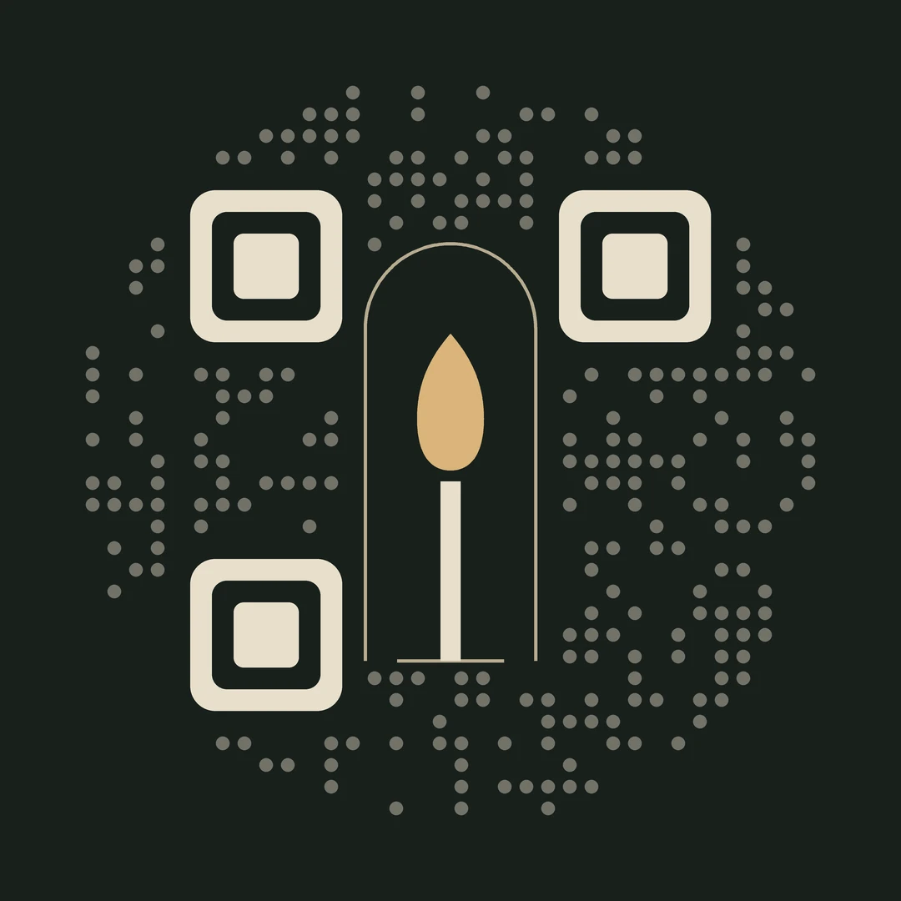

Пам’ять
Одна гідна сторінка: коротко, світло і назавжди.
Вартість за запитомразовий платіж
- Сторінка з біографією й датами
- До 7 фото
- До 4 нагород
- Цитата або епітафія
- Світла чи темна тема, свій колір
- QR-код і посилання для рідних
Сайти пам’яті та QR-коди на пам’ятники. Історія життя, фото й спогади відкриваються одним наведенням камери, у будь-якому місці й через багато років.

Наведіть камеру
СТОРІНКА ПАМ’ЯТІ
Мельник
Сергій Іванович
«Справжня смерть — це коли про людину забувають»
Як це працює
Ми беремо на себе всю технічну частину. Від родини потрібні лише спогади, фото й дати: решту зробимо ми.
Ви пишете або телефонуєте нам. Обираєте варіант, а ми надсилаємо просту анкету: дати, біографія, нагороди, фото.
Збираємо сайт, узгоджуємо з вами кожне слово й оформлення. Нічого не публікуємо без вашого підтвердження.
Отримуєте QR-код для пам’ятника чи таблички та посилання, яким можна поділитися з рідними й побратимами.
Формати
Від однієї гідної сторінки до повного цифрового меморіалу, який родина наповнює сама. У кожному варіанті — світла чи темна тема та колір, що пасує саме цій людині.
Одна гідна сторінка: коротко, світло і назавжди.
Вартість за запитомразовий платіж
Повна історія життя з датами, словами й місцем, куди можна прийти.
Вартість за запитомразовий платіж
Цифровий меморіал, який родина веде й доповнює сама.
Вартість за запитомразовий платіж
Усе, що підкаже серце. Ми втілимо будь-яке побажання родини.
Індивідуальнопісля розмови з родиною
| Пам’ять | Історія | Спадщина | Під ключ | |
|---|---|---|---|---|
| Фото | до 7 | до 30 | без обмежень | без обмежень |
| Нагороди | до 4 | до 10 | без обмежень | без обмежень |
| Відео | — | до 2 | без обмежень | без обмежень |
| Світла / темна тема, свій колір | так | так | так | так |
| QR-код і посилання | так | так | так | так |
| Таймлайн життя | — | так | так | так |
| «Слова, які пам’ятають» | — | так | так | так |
| Свічка пам’яті з лічильником | — | так | так | так |
| Місце поховання з маршрутом | — | так | так | так |
| Спогади близьких | — | через нас | форма на сайті + модерація | форма на сайті + модерація |
| Редагування | через нас | через нас | власна адмінка | власна адмінка |
| Окремі сторінки розділів | — | — | так | так |
| Медіа та джерела | — | — | так | так |
| Українська та англійська | — | — | так | так |
| Унікальний дизайн, власний домен | — | — | — | так |
| Біограф, реставрація фото, відеоролик, пластина | — | — | — | за бажанням |
Оформлення
Хтось пам’ятає людину тихою й світлою, хтось — суворою й сильною. Оберіть світлу чи темну тему, а колір ми підберемо під характер: від глибокої оливи до теплого піску. Спробуйте самі.
Олива · стримано й гідно
Полковник · 12.03.1970 — 09.05.2025
«Справжня смерть — це коли про людину забувають»
Що всередині
Ми розповідаємо не лише дати й посади, а якою була людина: що любила, як жартувала, кому першою приходила на допомогу.
Біографія та важливі дати на таймлайні, підтверджені родиною.
Звання, підрозділ, ордени з датами указів і джерелами.
Фото й відео, які відкриваються на весь екран і швидко завантажуються навіть на кладовищі зі слабким зв’язком.
Слова рідних, побратимів і друзів. Публікуються лише після перевірки.
Кожен може запалити свічку, і родина бачить, скільки людей пам’ятає.
Адреса, ділянка й кнопка маршруту для тих, хто хоче прийти.
Питання
Після того як ви надіслали анкету й фото, сторінку «Пам’ять» ми готуємо за кілька днів, а більші варіанти — від одного до трьох тижнів. Точний строк назвемо одразу після розмови.
Так. У варіантах «Пам’ять» та «Історія» зміни вносимо ми на ваше прохання. У варіантах «Спадщина» й «Під ключ» у вас є власна адмінка, де можна редагувати все самостійно.
Ми створюємо сторінки, щоб вони працювали десятиліттями. Умови зберігання та підтримки фіксуємо в договорі.
Жоден спогад не з’являється на сайті автоматично. Спершу його перевіряє родина або ми, і лише потім він публікується.
Ми надаємо QR-код у форматі для гравіювання чи друку. У варіанті «Під ключ» виготовимо металеву пластину, яку легко закріпити на камені чи табличці.
Так, посилання відкривається з будь-якої країни й на будь-якому телефоні. У варіантах «Спадщина» й «Під ключ» є англійська версія.
Зв’язатися
Напишіть або зателефонуйте в будь-який час: ми на зв’язку 24/7. Розповімо всі деталі, підберемо рішення під ваш бюджет і супроводжуватимемо від першої розмови до готового QR-коду.
Telegram-бот navichno Дасть відповіді на питання, допоможе обрати формат і розрахує вартість.